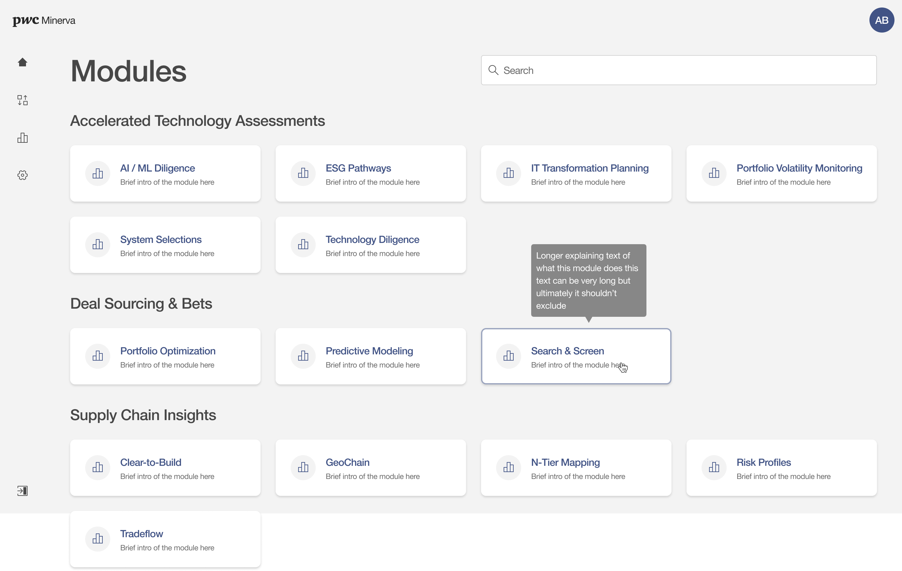
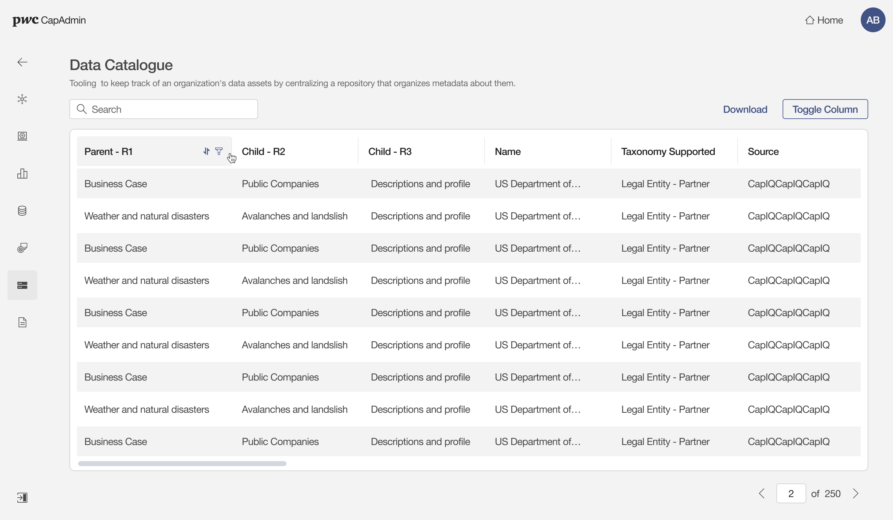
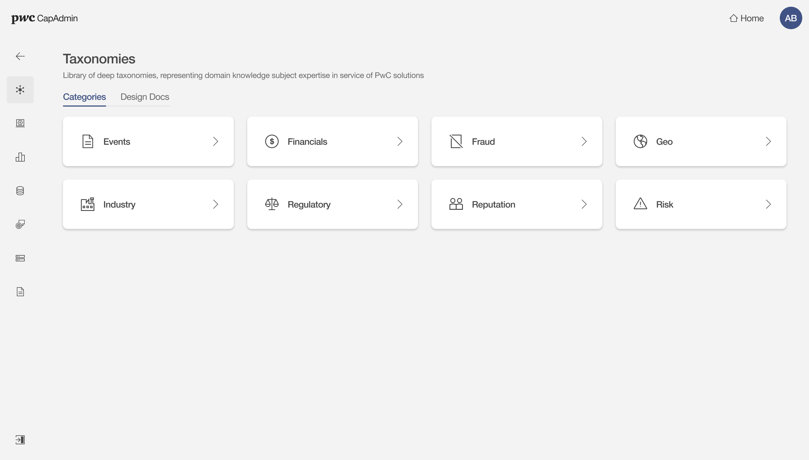
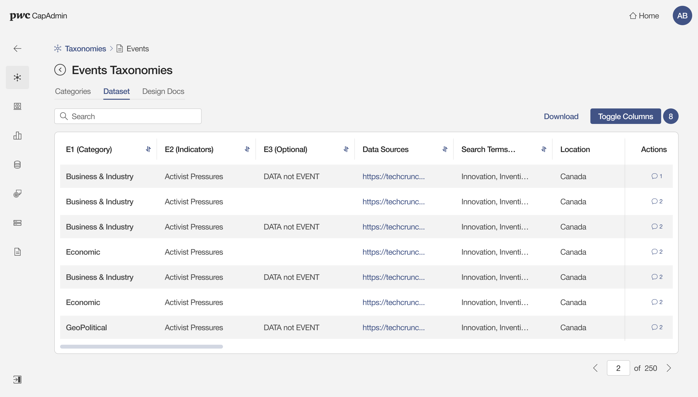
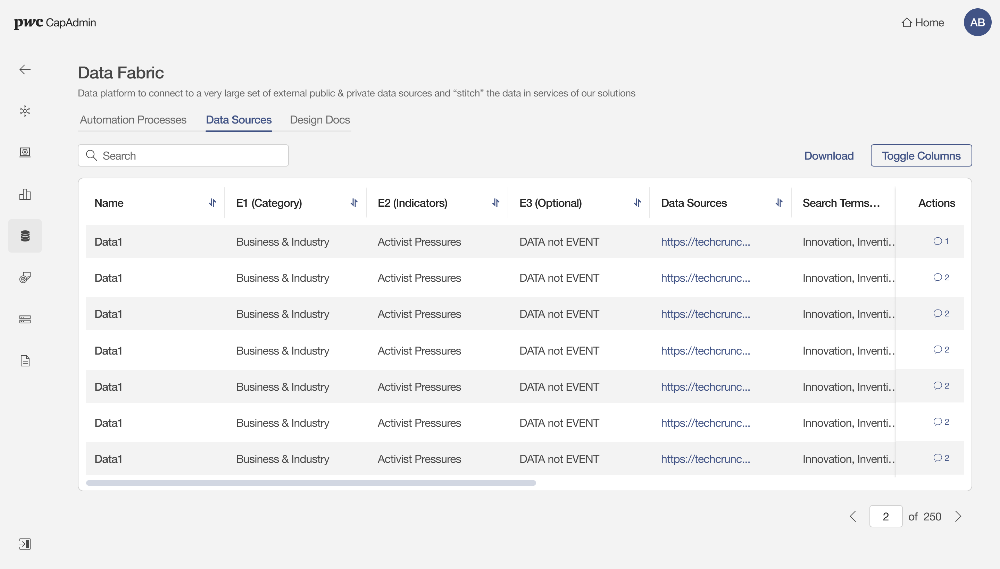
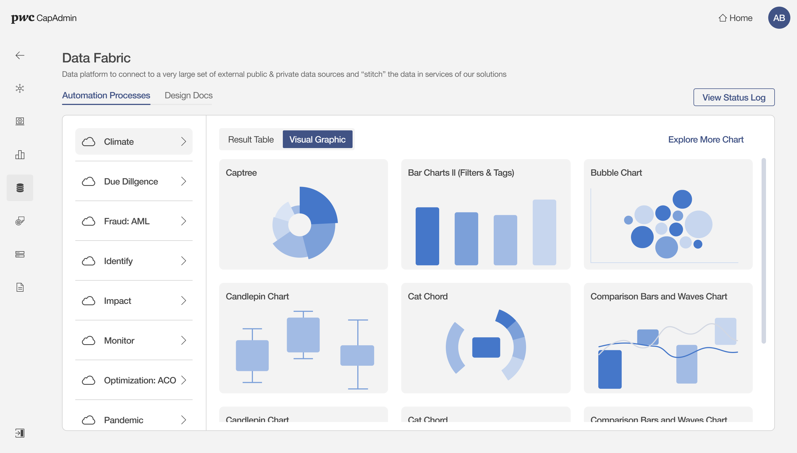
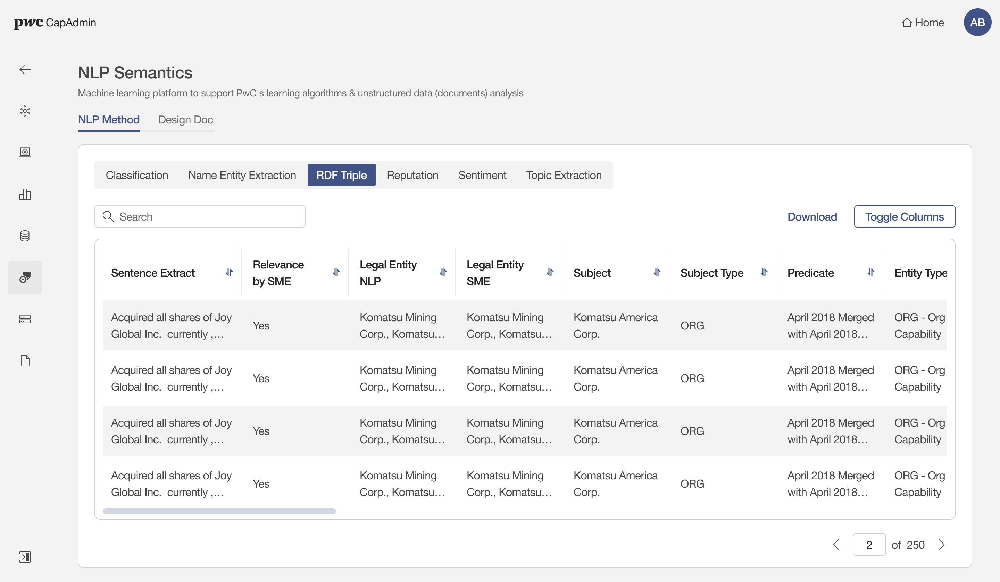
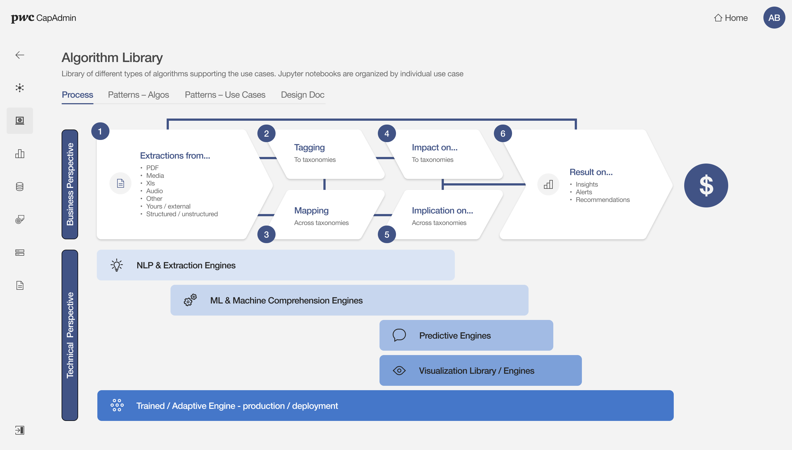
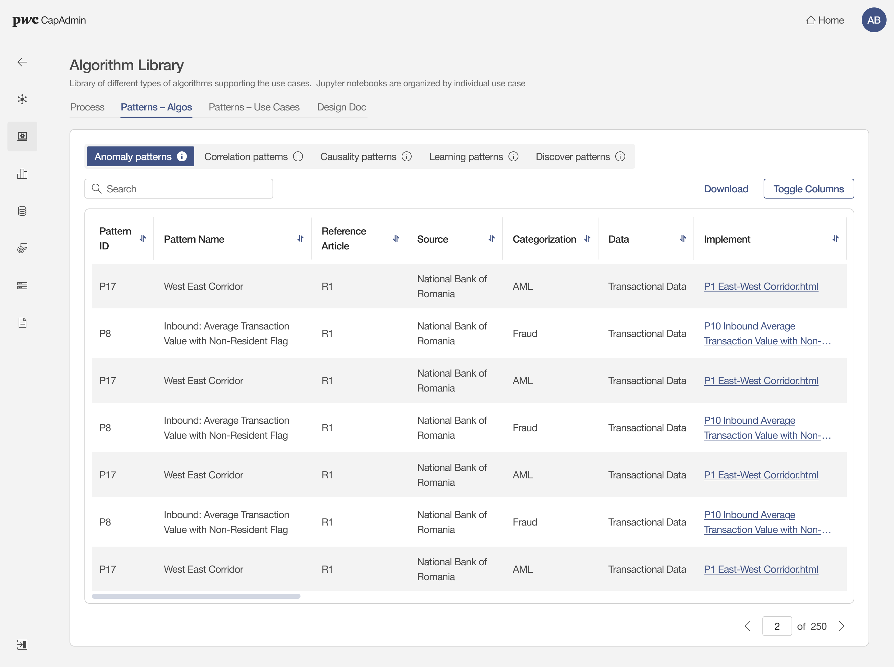
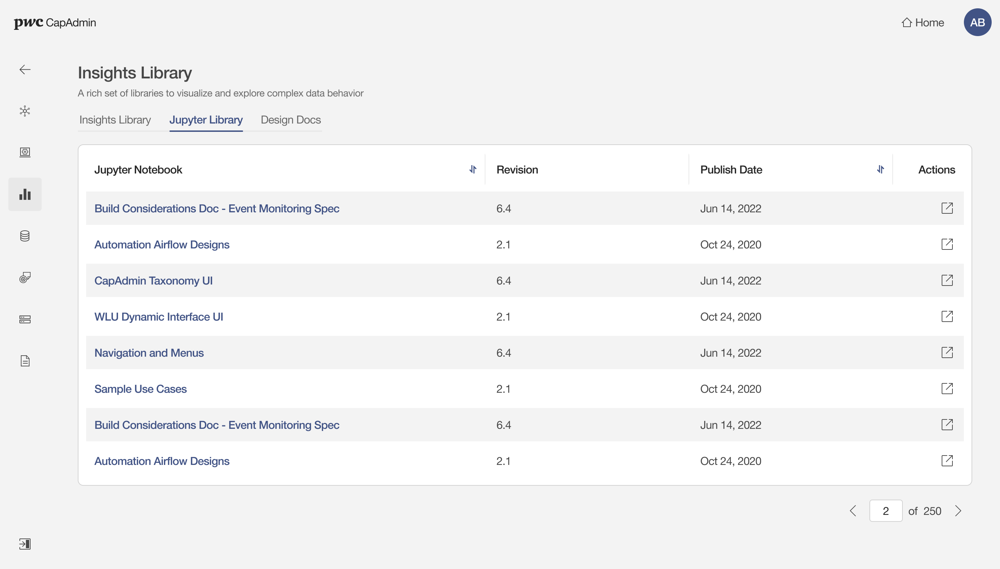

CAPADMIN
PwC | Enterprise AI Platform | Product Design Lead
I designed a modular intelligence platform that helped consulting teams access data assets, automation pipelines, taxonomies, NLP methods, algorithms, and reusable analytical libraries from one coherent product experience.

PwC teams were working with a growing ecosystem of data assets, automation scripts, taxonomies, NLP methods, algorithm patterns, and notebook-based analytical work. The problem was not a lack of capability. The problem was that the capability was fragmented.
Different teams needed to answer the same operational questions repeatedly: Where is the right data source? Which taxonomy supports this use case? What automation is running? Which model pattern can be reused? Where is the design or technical documentation? Without a shared product structure, knowledge discovery depended on tribal memory and handoffs.
Users had to move between repositories, spreadsheets, automation logs, and expert conversations to find the right asset.
Consultants thought in business modules and use cases; data teams thought in pipelines, sources, methods, and model artifacts.
The platform needed to make provenance, status, revision, ownership, and documentation visible enough for enterprise use.
My design approach was to make CapAdmin behave like an operating layer for intelligence work: a place where business modules, data assets, taxonomies, NLP methods, algorithm patterns, and notebooks could be discovered through a consistent navigation model.
Instead of treating every module as a separate product, I defined a repeatable module grammar: overview, searchable inventory, structured table, documentation, status, and action. This let very different technical objects feel familiar without forcing them into the same interface.

The first major design decision was to create a left navigation system organized around capability families, not organizational ownership. This helped users build a map of the platform around the work they were trying to do: manage taxonomies, inspect data fabric, review automation, explore NLP outputs, find algorithms, or open reusable notebooks.


Landing and category pages were designed for orientation. Tables were designed for operational review. This reduced cognitive load by keeping browsing, validation, and action in distinct modes.
For data assets and NLP outputs, I leaned into structured tables instead of card layouts. Analysts needed comparison, sorting, metadata, and scan efficiency more than visual decoration.
Design docs and Jupyter libraries were not hidden as secondary files. They were represented as first-class tabs and libraries, reinforcing trust and maintainability.
Data Fabric was the operational core: a place to connect public and private data sources, monitor automation processes, review outputs, and understand where data moved through the platform.


The platform also needed to expose machine-learning capabilities in a way that non-specialists could understand while still supporting expert review. I treated NLP methods and algorithm patterns as reusable capability libraries with consistent states, tabs, and documentation paths.


One of the most important design shifts was treating notebooks, algorithms, and documentation as reusable product assets. This supported repeatable delivery across client work, while giving teams a clearer way to discover what already existed before building from scratch.


The final design established a scalable product language for CapAdmin: consistent navigation, repeatable module patterns, searchable inventories, operational tables, visible documentation, and clear bridges between business use cases and technical artifacts.
For a senior design role, the value of this work was not only the screen design. It was creating a platform structure that could absorb new data sources, taxonomies, algorithms, and analytical libraries without requiring every team to reinvent the interface.
Unified fragmented intelligence capabilities into a navigable platform model.
Surfaced status, documentation, source, revision, and ownership signals where users needed them.
Created patterns that could support new modules without redesigning the product from scratch.